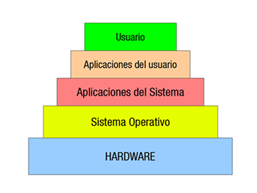
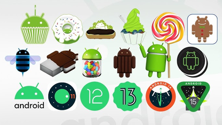
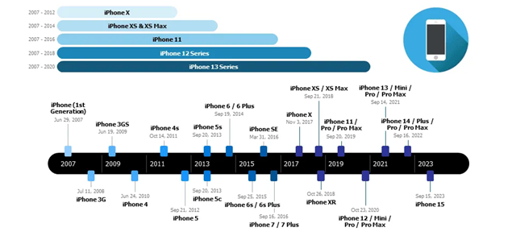

Sistemas Operativos
Introducción
Un sistema operativo móvil es el software que gestiona el hardware y los recursos de un dispositivo portátil (teléfonos, tabletas, relojes, etc.), proporcionando servicios básicos y la plataforma sobre la que se ejecutan las aplicaciones.
Su evolución ha estado marcada por los cambios en la tecnología de hardware, en las necesidades de los usuarios y en la competencia entre fabricantes.

Primeros pasos: sistemas propietarios y básicos (años 90 – inicios 2000)
En los años 90 los dispositivos móviles apenas podían ejecutar funciones básicas. Sin embargo, empezaron a aparecer sistemas que, aunque primitivos, sentaron las bases. Antes de que existieran los “smartphones” modernos, los fabricantes desarrollaban sistemas muy simples y cerrados. Ejemplos:
- Palm OS (1996): diseñado para las PDA (asistentes digitales personales). Permitía organizar contactos, calendarios y ejecutar apps ligeras.
- Windows CE (1996): variante de Microsoft para dispositivos portátiles, usado en algunas PDAs y móviles tempranos.
- Symbian OS (1997): desarrollado inicialmente por Nokia y otros fabricantes. Fue durante años el sistema operativo dominante en móviles, especialmente en Europa y Asia.
- BlackBerry OS (1999): orientado a correo electrónico seguro y teclado físico, clave en el sector empresarial.
Estas plataformas eran muy distintas entre sí, lo que generaba fragmentación. Aun así, fueron cruciales para experimentar con conceptos como multitarea, aplicaciones externas y sincronización con ordenadores.
Características comunes:
- Interfaces muy limitadas, basadas en menús sencillos.
- Poca memoria y escasa capacidad multitarea.
- Ecosistemas de apps reducidos y fragmentados.
El salto a los smartphones (2007–2010)
El 2007 cambió todo: Apple lanzó el iPhone con iOS, un sistema diseñado desde cero para pantallas táctiles. La experiencia de usuario era radicalmente diferente: fluida, intuitiva, basada en gestos y con un ecosistema controlado de aplicaciones (App Store).
En 2008, Google respondió con Android, un sistema basado en Linux y pensado para ser abierto y adaptable a diferentes fabricantes. Esto permitió que marcas como Samsung, HTC o Motorola adoptaran Android y ofrecieran dispositivos muy variados.
Durante estos años también aparecieron otros actores:
- Windows Mobile evolucionó hacia Windows Phone, con un diseño innovador pero poca tracción.
- Symbian y BlackBerry OS intentaron adaptarse, pero empezaron a perder protagonismo.
Era el inicio de una nueva era en la que las apps, la conectividad y la experiencia táctil se volvieron esenciales.
La era de la consolidación (2010–2015)
- iOS seguía creciendo, con un ecosistema exclusivo y cada vez más pulido.
- Android empezó a superar en cuota de mercado gracias a su carácter abierto y a la variedad de dispositivos.
- Windows Phone sorprendió con su interfaz “Metro”, muy diferente a lo visto, pero no consiguió atraer a los desarrolladores.
- BlackBerry y Symbian se quedaron atrás: no lograron adaptarse a la era táctil ni a las nuevas expectativas de los usuarios.
Fue también el momento en que las tiendas de aplicaciones se consolidaron como el verdadero motor económico de los sistemas operativos móviles. La famosa frase “hay una app para eso” reflejaba el nuevo poder de estos ecosistemas.
Dominio absoluto de iOS y Android (2015–actualidad)
A partir de 2015, el mercado se consolidó en un duopolio:
-
Android: sistema abierto, utilizado por decenas de fabricantes (Samsung, Xiaomi, Huawei, etc.), con gran diversidad de dispositivos y gamas. Android
-
IOS: sistema cerrado, exclusivo de Apple, con gran integración entre hardware y software y un ecosistema muy rentable. IOS
Características de esta etapa:
- Interfaces limpias y fluidas, centradas en gestos y accesibilidad.
- Mejoras constantes en seguridad, actualizaciones periódicas y control de permisos.
- Ecosistemas ampliados: relojes inteligentes, tablets, televisores, automóviles.
- Introducción de inteligencia artificial en asistentes como Siri y Google Assistant.
Otros sistemas como Tizen, KaiOS o HarmonyOS han intentado encontrar un hueco, pero su alcance ha sido limitado en comparación.

Timeline Android

Timeline IOS
Conclusiones
- La evolución de los sistemas operativos móviles refleja el paso de dispositivos simples y cerrados a plataformas avanzadas y globales.
- Palm, Symbian y BlackBerry fueron pioneros, pero quedaron atrás frente a la revolución táctil y de apps iniciada por iOS y Android.
- Hoy, estos dos sistemas no solo dominan los teléfonos, sino que son la base de ecosistemas completos que abarcan relojes inteligentes, tabletas, televisores y más.
- El futuro apunta a una mayor integración con inteligencia artificial, más seguridad y privacidad, y un crecimiento de la convergencia entre dispositivos.